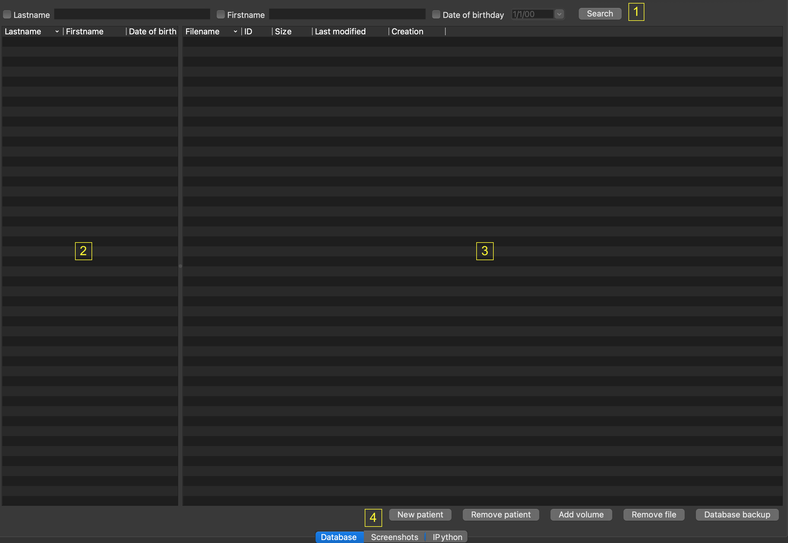

Database Manager
A patient database manager is provided by PySisyphe from the “Database” tab of the central area.
Database query bar to define an identity filter at the top (1).
Lastname, check the box and edit a patient’s lastname in the edit box.
Firstname, check the box and edit a patient’s firstname in the edit box.
Date of birthday, check the box and chosse a date of birthday.
Search, run the database query with the identity filter.
List of patients selected by database query bar (below query bar, on the left, 2). The list has three columns: Lastname, Firstname and Date of birthday. Left-click on a column header to sort patients by identity. Left-click to select a patient row.
Right-click to display a popup menu:
New patient, open a dialog box to create a new patient entry in the database by editing lastname, firstname and date of birth.
Remove paitent, remove selected patient from database.
List of file(s) for the selected patient (below query bar, on the right, 3). This list has five columns: Filename, ID, Size, Last modified date, Creation date. Left-click on a column header to sort files by name. Left-click to select a volume row. Double-click on a volume row to open it. This frame also supports drag-and-drop of PySisyhe files from the File Explorer on the MS Windows platform, or from the Finder on the MacOS platform.
Right-click to display a popup menu:
Open volume, open the volume of the selected row in the thumbnail bar.
Edit volume attributes, open a dialog for editing selected volume attributes.
Remove volume, remove the volume of the selected row from the database.
Five buttons on the bottom (4):
New patient, open a dialog box to create a new patient entry in the database by editing lastname, firstname and date of birth.
Remove patient, remove selected patient from database.
Add volume, open a file dialog to add a volume(s) to the database.
Remove file, remove selected file from database.
Backup, open a directory selection dialog. A backup of the database will be made to the following directory. If a backup already exists in this folder, it will be updated (using last modified field).
Same functions (2, 3 and 4) are accessible via the menu bar (Views -> Database).